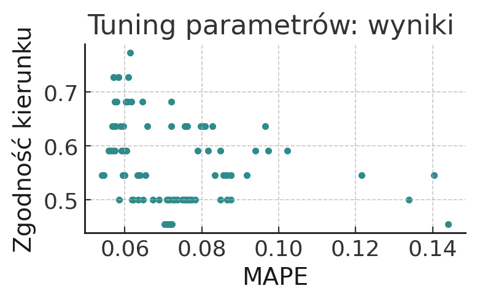
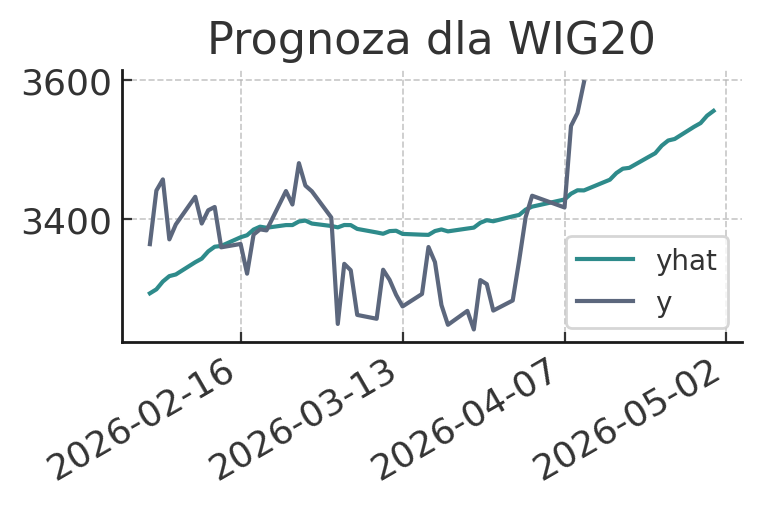
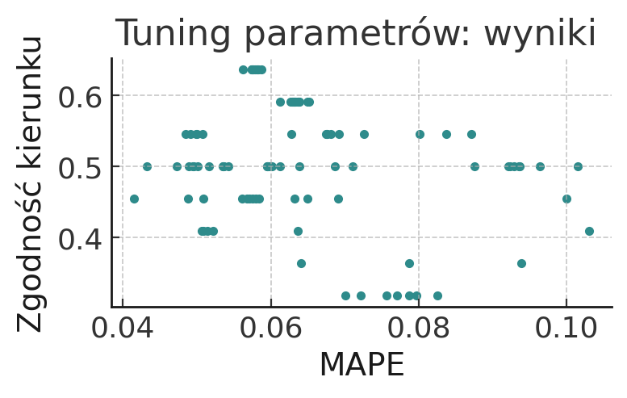
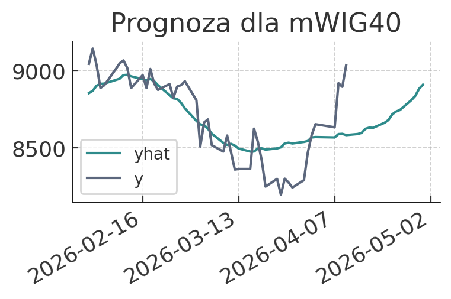
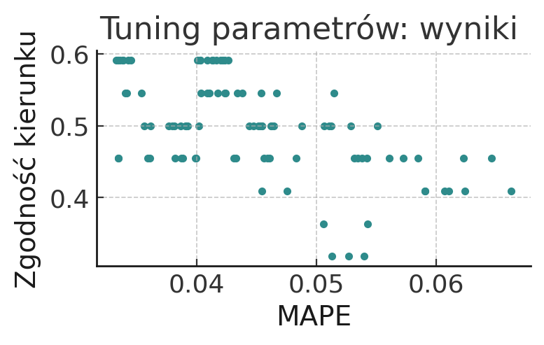
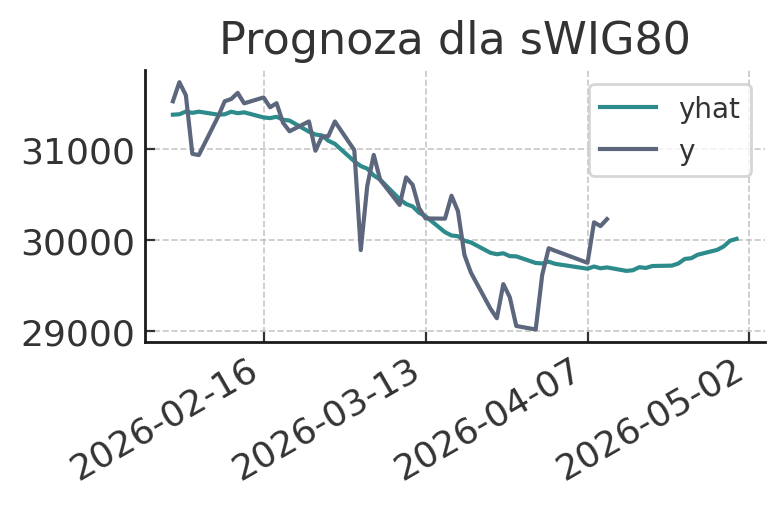

Metody statystyczne oraz oparte na uczeniu maszynowym, które w ostatnich latach zyskały na popularności, kuszą swoją łatwością użycia i dobrą skutecznością. Tyczy to się również prognozowania szeregów czasowych, co można udanie wykorzystać w analizach rynków kapitałowych. W tym materiale przyjrzę się prognozom wygenerowanym dla czterech głównych indeksów na GPW - WIG, WIG20, mWIG40 i sWIG80, a prognozy przygotowywane będą przy użyciu biblioteki Prophet. Aktualna sytuacja geopolityczna i wynikająca z niej podwyższona zmienność z pewnością będą stanowiły duże wyzwanie dla modelu, o czym przekonamy się przy okazji kolejnego podsumowania.
Biblioteka Prophet - informacje teoretyczne
Biblioteka została stworzona przez pracowników Facebooka i w ostatnich latach zyskała bardzo mocno na popularności. Prognoza jest efektem dekompozycji szeregu na trend, sezonowość i święta. W trakcie tworzenia modelu możliwe jest dostosowanie odpowiedniej sezonowości (np. tygodniowa, roczna); wskazanie jej wagi, rodzaju trendu (multiplikatywny / addytywny), punktów zwrotnych (automatycznie lub manualnie). W wielu przypadkach przydatne będzie także dodanie regresorów, przy czym muszą one później być podane także za okres prognozowany (np. prognoza tygodni, zaplanowane eventy itd.), co akurat w przypadku prognozy indeksów giełdowych nie do końca znajdzie zastosowanie.
Tuning parametrów - w poszukiwaniu optymalnych parametrów
Pierwszym krokiem do wykonania będzie przetestowanie różnych kombinacji parametrów, jakie przyjmuje Prophet, celem znalezienia zestawu optymalnego. W moim przypadku za metryki sukcesu przyjąłem MAPE (średni absolutny błąd procentowy) oraz część prognoz, która pokrywała się pod względem kierunku z wartością zrealizowaną (czyt. czy prognoza pokazywała wzrost za okres, kiedy rzeczywiście urosło (i odwrotnie)). Uznałem, że to istotne aby nawet jeśli prognoza nie trafi idealnie w punkt, to wskazywała odpowiedni kierunek, w którym zmierza kurs.
Tuning parametrów przeprowadziłem wykonując hipotetyczne prognozy na miesiąc do przodu - przykładowo 31 stycznia sprawdzałem jakim wynikiem zamknie się luty. Prognozy na dni w trakcie miesiąca w kolejnych częściach będą wyświetlane, jednak nie podlegały ocenie w ramach tuningu parametrów.
Elementem, który zweryfikowałem na starcie, lecz nie jest wykazany w tym raporcie, to fakt że Prophet nie potrzebuje bardzo długiej historii, a wręcz może mu ona szkodzić. Przykładowo po wprowadzeniu danych od 2021 roku do dziś, osiągałem gorsze rezultaty niż w przypadku datasetu za lata od 2023 w górę. Ostatecznie, właśnie ten zakres czasu będzie brany pod uwagę przy uczeniu modelu. Co ważne, tuning hiperparametrów będzie wykonywany dla każdego indeksu osobno.
Jeśli chodzi o parametry, testowane będą: punkty zwrotu (tu przetestuję sygnały płynące z SMA100, wskaźnika supertrend oraz autodetekcję zaszytą w Prophecie) i ich waga, sezonowość roczna/weekendowa oraz ich waga; rodzaj sezonowości (multiplikatywna / addytywna)
WIG20
Z tuningu parametrów wyłonił się zestaw kombinacji, który historycznie mylił się średnio (absolutnie) o mniej niż 6% i jednocześnie w ponad 70% wyznaczony kurs pokrywał się rzeczywistą realizacją.
Zgodnie z prognozą, na kwiecień WIG20 powinien zakończyć na poziomie 3555 pkt., co względem odczytu z 10 kwietnia - 3596.84 pkt, co oznaczałoby około 1-procentowy spadek w porównaniu do ostatniej znanej wartości.

mWIG40


sWIG80

